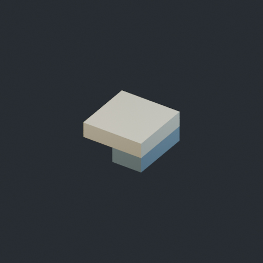
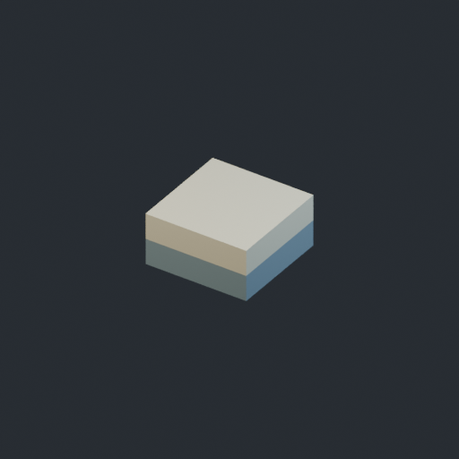
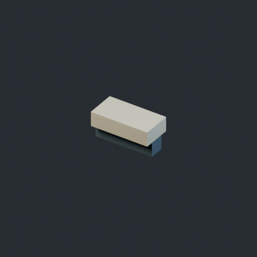
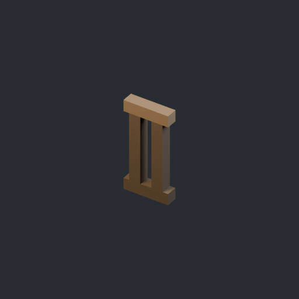
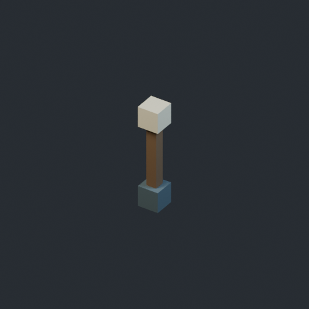
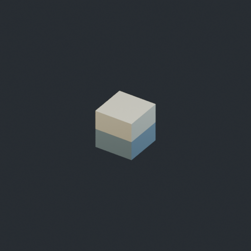
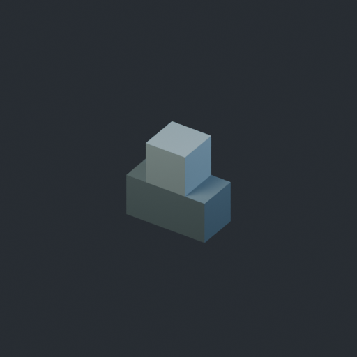
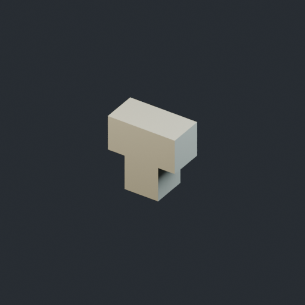
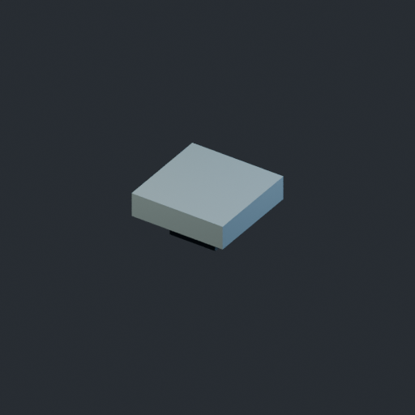

这里展示工坊产出的9件原创模型，图片均为实际 Blender 渲染。编号供桥上来源高亮对照：Unity负责安排它们的数量、位置与连接，并为配方允许的桥芯区域生成结构。
细节单元0.125m，底部中心枢轴。实际FBX直接参与组合；不将整座桥反复盖章，也不把素材当作地形参考场。

0.5 × 0.25 × 0.5 m
stairs.tread

deck.surface

0.5 × 0.25 × 0.25 m
edge.coping

0.5 × 1 × 0.125 m
rail.segment

0.25 × 1.25 × 0.25 m
rail.post

0.25 × 0.25 × 0.25 m
arch.course

0.5 × 0.5 × 0.25 m
arch.springing

arch.crown

abutment.cap
九件源、FBX、色板均已独立重开验证。素材契约与验证边界 · 完整来源清单